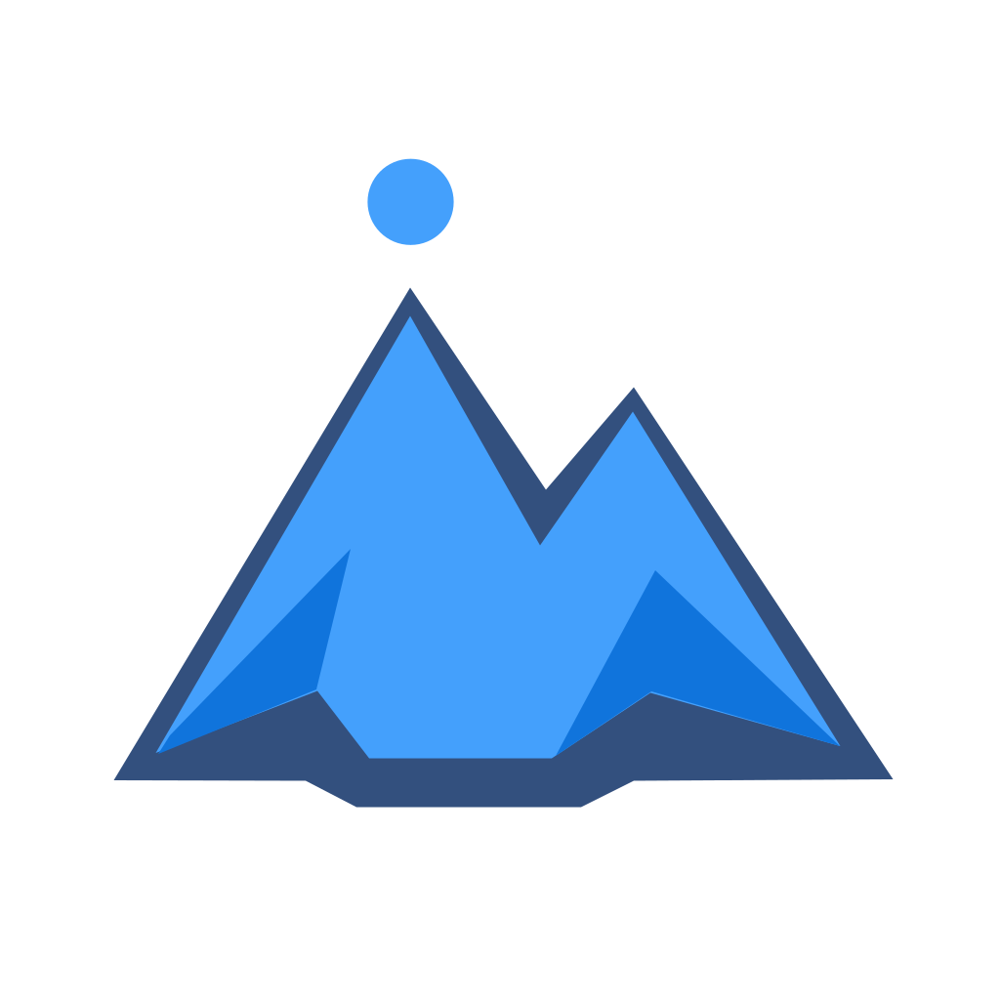
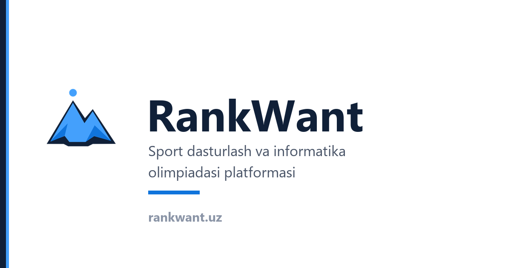

A1 · A2 · C2
Crest o‘lchamlari (wordmarksiz)
16–32: production raster (favicon.ico, mark-32.png) — brauzer tabiga yaqin.
SVG ni 16px da ko‘rsatish noto‘g‘ri (vektor silliq masshtablanadi, favicon emas).
24 (32 PNG ↓)
32 PNG
48 (96 ↓)
64
96
180
512 ↓
A3 · C2
Wordmark (Crestsiz) — header simulyatsiyasi
320px: monogram R; keng: RankWant (BrandMark responsive).
R
RankWant
320px konteyner
RankWant
768px konteyner
A4
Ajralish (32px qator — vizual nazorat)
Rasmiy raqobatchi logotiplari emas; shakl eslatmalari. Siz «chalkashmaydi» deb baholang.
CF ustun
RW
RW monogram
RankWant Crest
B1 · B2
Fonlar
light + crest
gray

dark + crest-dark
accent fon + white protoPWA theme_color: #102038
B3 · C5
OG / ijtimoiy (production)

Taklif lockup (prototip SVG):
B4
Avatar crop (1:1)
Nuqta va cho‘qqilar kesilmasligi kerak.
B5 (Variant A prototip)
Monochrome Crest
crest-black.svg
crest-white.svg
C1
Clear space (taklif: r ≈ 4.3% canvas)
Nuqta radiusi 44.1 @1024 — atrofida kamida shu qadar bo‘sh joy.
C3
Crest ↔ UI rang (mapping taklifi)
| Token | Crest (SVG) | UI (web) | Eslatma |
|---|---|---|---|
| Primary bright | #44A0FC | #5b8cff (--rw-accent) | Belgi va interfeys alohida — birlashtirmaslik yoki keyin sync |
| Mid | #1074DC | — | Faqat Crest facet |
| Structural | #102038 | PWA theme, matn | Umumiy navy |
| Wordmark accent | — | #4470e6 (--rw-accent-ink) | «Want» matni |
C4
Do-not-use (namuna — qilmaslik)
❌ distort
❌ rotate
❌ stretch
❌ recolor
❌ shadow
C5
Ishlatish xaritasi
| Muhit | Primitive | Asset |
|---|---|---|
| Header / topnav | Wordmark | BrandMark.tsx |
| Footer / auth | Wordmark | Matn + accent |
| Favicon | Crest | favicon.ico |
| PWA | Crest | mark-192/512.png |
| OG / share | Lockup | og-default.png (+ lockup prototip) |
| Email avatar (kelajak) | Crest | bimi.svg |